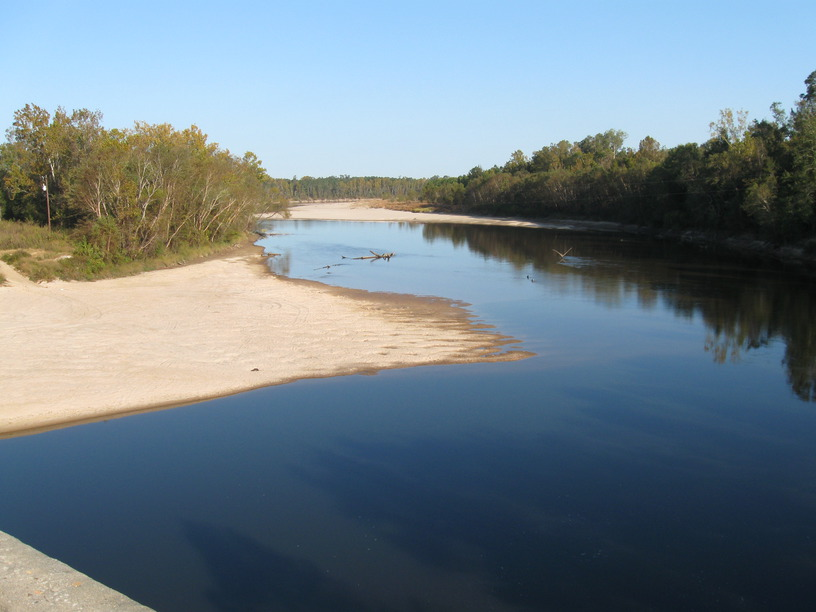
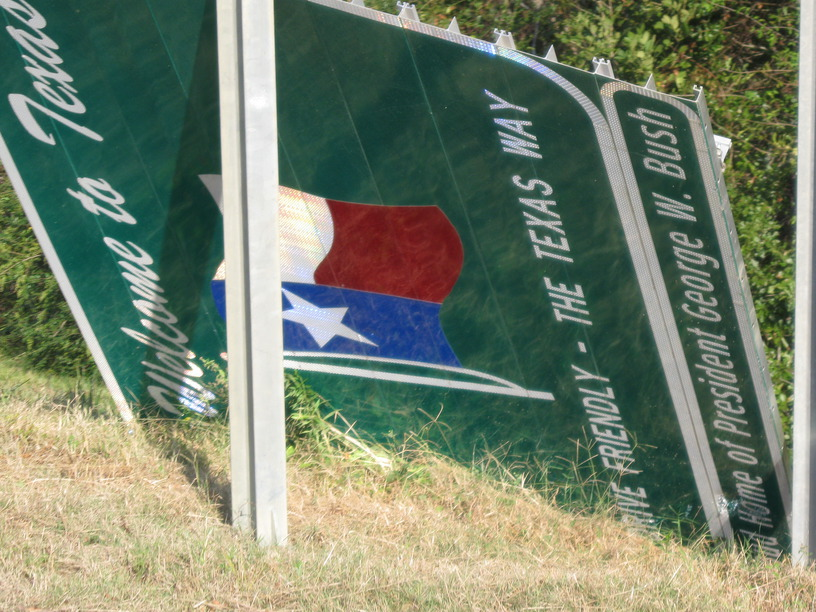

Oct 2008, Kountze, TX
I rode a lot of miles today—over 81.5. Didn't see any other cyclists, though. I'm camping in the yard of a very friendly man named Tony. He and his son were out clearing trees downed by the recent hurricane (although I don't think his son, age 4, was helping much). He offered me some MREs, which were left over from the hurricane relief efforts. I took three, & we'll see how they turn out.
That brings up the subject of food. I've had some very good local cuisine in recent days. There was the jambalaya that Joey cooked & gave me—lots of meat, lots of spices, lots of rice—very tasty. Then last night I tried boudin, another Cajun specialty. Boudin is kind of like jambalaya in a sausage casing. The one I had was more rice than meat, though, & I think jambalaya is often closer to 1/2 & 1/2. Then today I stopped for some Texas BBQ (I rode into Texas around 9:30 this morning). The sandwich didn't have a typical BBQ flavor—like what you get from BBQ sauce—but it was sooo good. The meat was very juicy & flavorful. I'm looking forward to eating my way across Texas.
Note in the margin: DQ habit 2 days in a row

